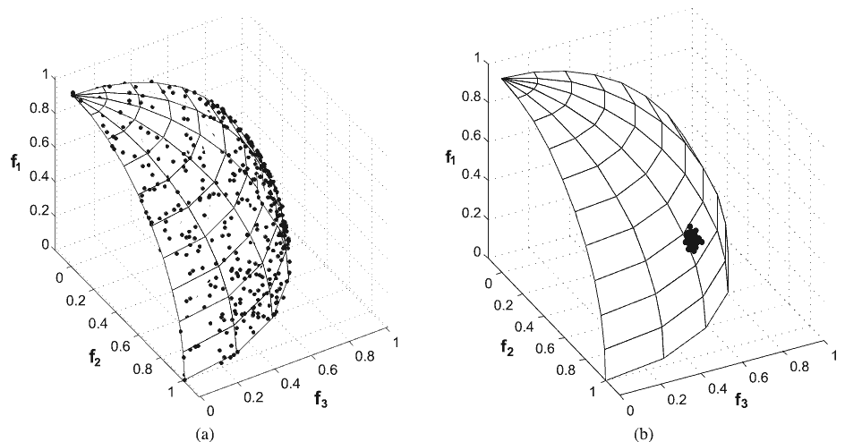

What are fitness sharing and niche count in evolutionary computation?
What are "fitness sharing" and "niche count" in the context of evolutionary computation?
Answer
Evolutionary algorithms (EAs) tend to converge to a single solution as the diversity of the population diminishes [1]. This behavior is known as genetic drift. Any technique that maintains diversity in the population based on the distance between the population members is called a Niching technique.
Fitness sharing is a type of Niching, where the fitness of each individual is scaled based on its proximity to others. This means that good solutions in densely populated regions are given a lower fitness value than comparably good solutions in sparsely populated regions. In effect, the algorithm's selection technique places less emphasis on these high-quality, high-density solutions. The distance can be calculated based on the values in either decision space (genotype), solution space (phenotype), or both (as in Goldberg and Richardsen [2]). Distance in genotype is usually defined using the Hamming distance whereas distance in phenotype is usually defined using Euclidean distance.
A simple fitness sharing method is given by the following Java method:
/** * Computes the shared fitness value for a solution * @param index the index of the solution for which a shared fitness value will be computed * @param minDist any solution closer than minDist will share fitness with the current solution * @param shareParam a parameter that defines how much influence sharing has. Higher = more sharing. * @param population the array of solutions. Each solution has a genotype and associated fitness value. */ public double computeSharedFitnessValue(int index, double minDist, double shareParam, Solution[] population){ double denominator = 1; for(int j = 0; j < population.length; j++){ final double dist = hamming_dist(population[index],population[j]); if (dist < minDist){ denominator += (1-(dist/shareParam)) } } return population[index].getFitnessValue()/denominator; }
Motivational Example: The following figure perfectly illustrates why fitness sharing is so important in multi-objective problems. In Figure A (left), diversity was maintained throughout execution. As a result, the solutions span a considerable portion of the true Pareto front (shown here as wire frame). In Figure B (right), the population only converged to a small area of the Pareto front. In many situations, even if the solutions in Figure B were of higher quality, a decision maker would prefer the diversity of options provided in Figure A to the (nominal) improvement in quality of Figure B.

Additional Resources:
- [1] Genetic algorithms with sharing for multimodal function optimization
- [2] Genetic Algorithms for Multi-Objective Optimization: Formulation Discussion and Generalization